This project tackles communication challenges in cross-cultural families by encouraging members to co-create a dinner, fostering mutual understanding.
Using two types of card games and a mobile app, it gamifies task allocation, emotion sharing, and deep conversations, helping first-generation migrants express feelings more easily and strengthening family connections.
1st-Gen Migrants and 2nd-Gen Migrants often face communication barriers due to societal pressures and the expectation to maintain a strong self-image.
As a result, 1st-Gen migrants often struggle to reveal their true feelings and vulnerabilities.
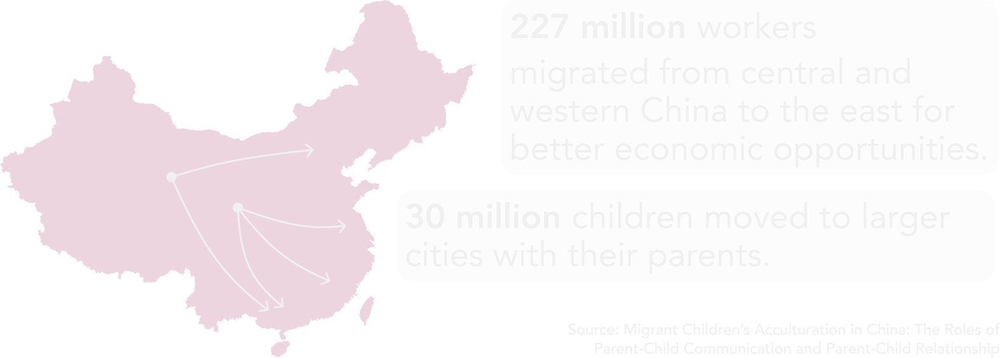
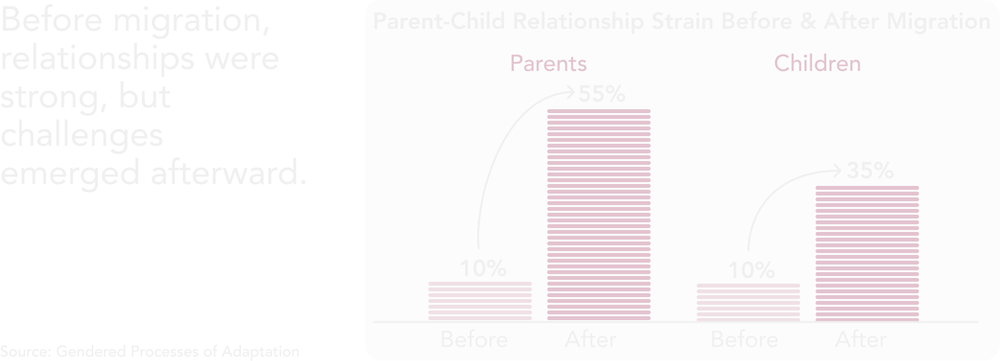
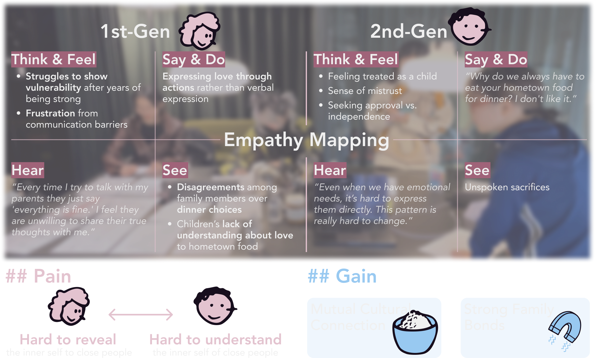
The true barrier isn't just a generation gap - it's a gap in authenticity. The research revealed that 1st-gen migrants often feel compelled to hide or simplify their true struggles and achievements, leaving the second generation disconnected from their core values and cultural context. My primary design goal is to break down this self-censored expression. Therefore, I aim to create a secure mechanism that allows the first generation to authentically voice their experiences, turning their real stories into a pathway for deeper mutual understanding.
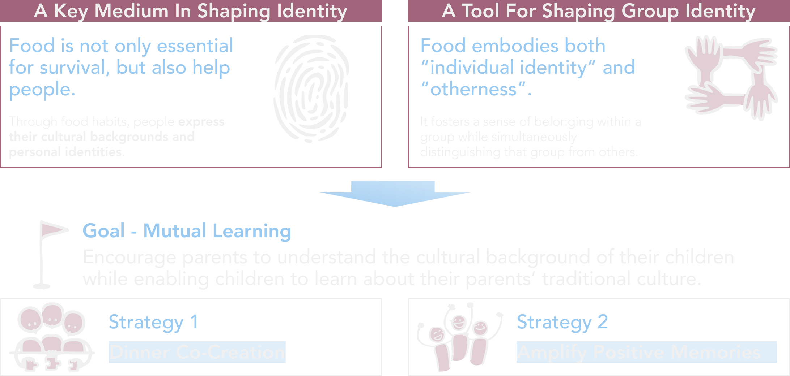
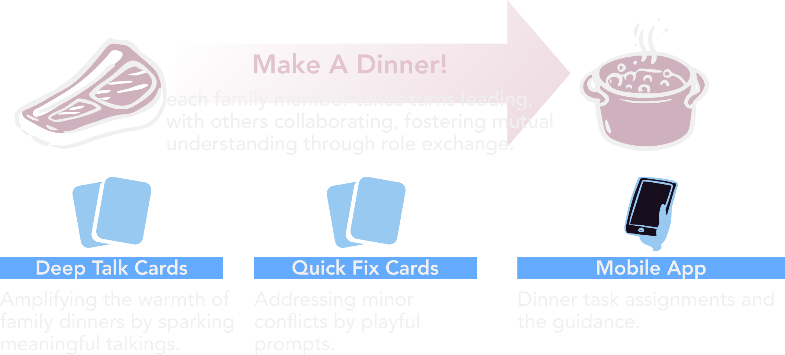
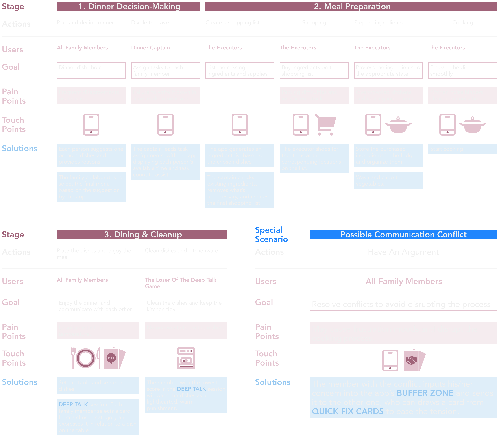
The card format Quick Fix mechanism, is designed to ensure both fair decision-making and emotional relief. The front of each card contains a specific action (e.g., Who Decide, Clear the Air), while the back indicates the card's category.
- Decision Support (Who Decide): This function provides a fair and structured process to help users quickly reach a resolution when opinions differ.
- Tension Relief (Clear the Air): This mechanism uses warm or humorous prompts to immediately ease tension after a disagreement, ensuring the conversation remains efficient and pleasant.
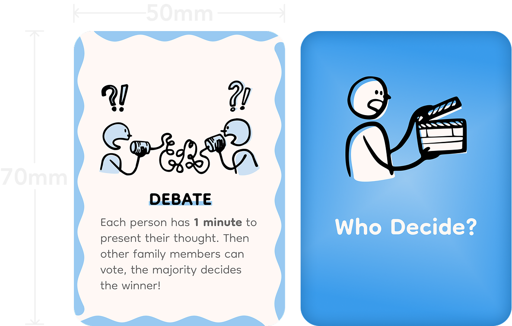
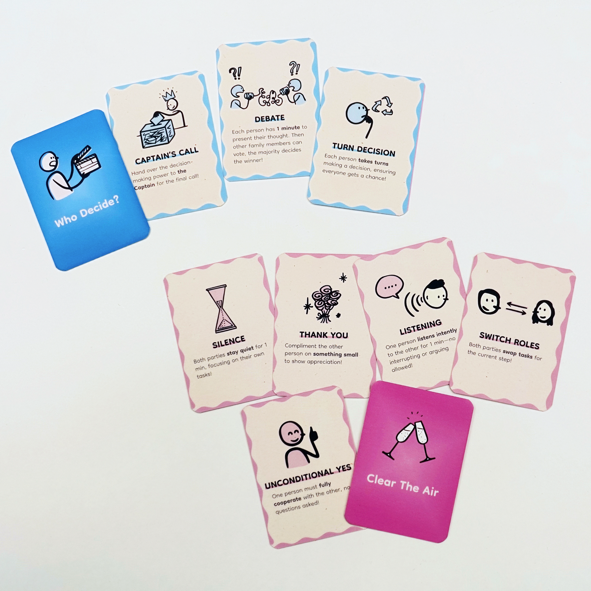
Rooted in the Ecological Systems Theory, the mechanism uses food as a trigger for emotion and culture, expanding the dialogue to broader life experiences and personal feelings. By combining Deep Talk cards with a rotating draw tube, it can ensure every member can easily draw and answer deep, life-dimension-based questions, fostering profound mutual understanding.
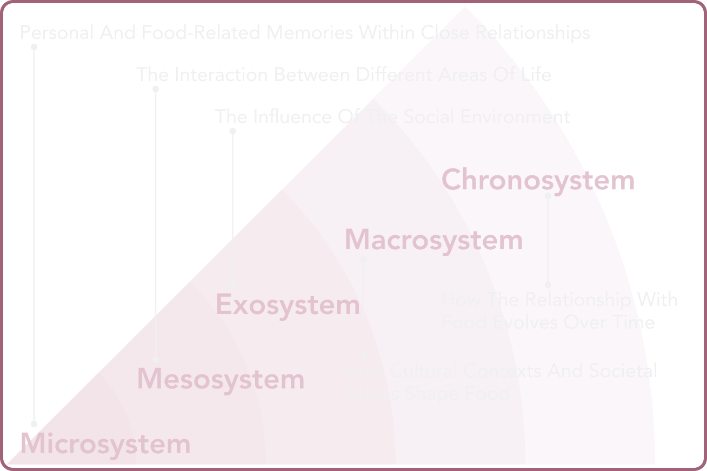
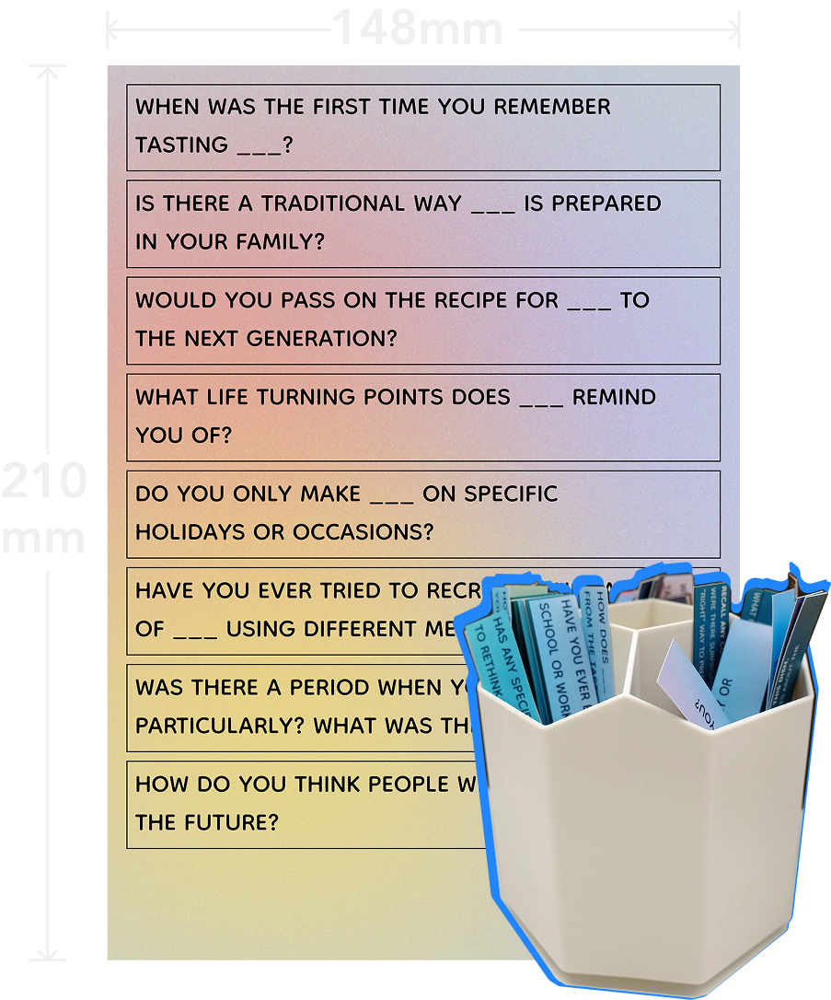
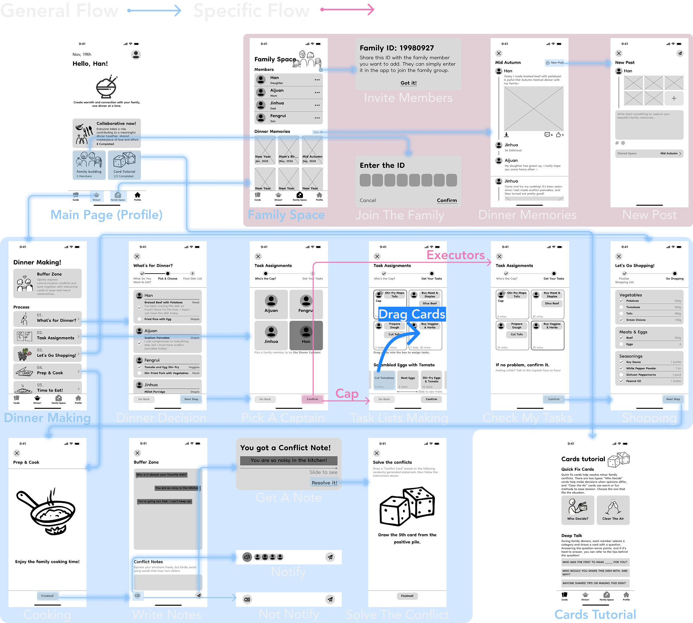
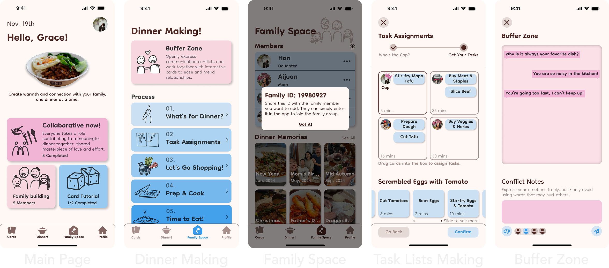
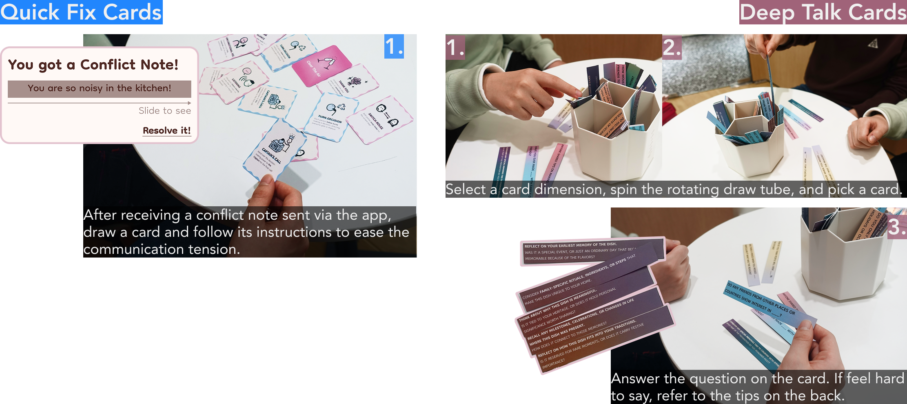
Due to my parents' busy schedules and that we live in different places, they couldn't directly use this card game.However, I showcased my design to them via an online meeting. Here are some of their feedback:
So, my next focuses for improvement are:
- Adding an electronic card feature.
- Inviting more migrant families like mine to test and provide feedback.